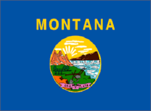
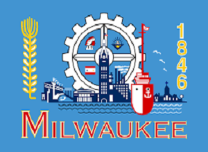
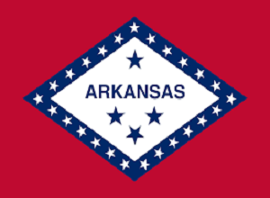
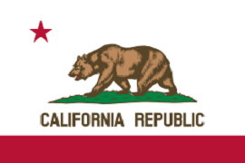
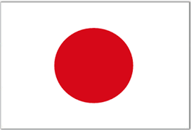
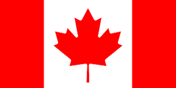
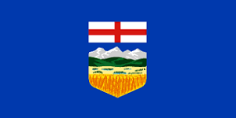
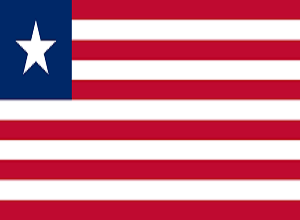
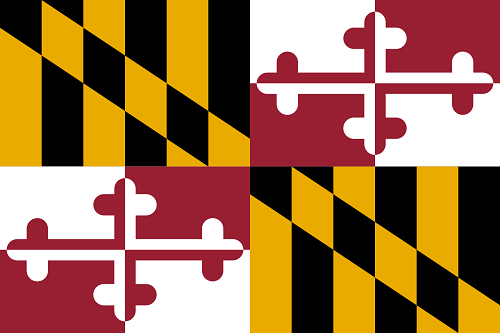

Let's talk about the most amazing peices of artwork known to man:
FLAGS!!!!
There are many amazing flags out there and this page includes my personal favorites and the ones I hate the most as well
I'll start off with the flags of the countries and regions that make up the Nordic Council because not only do they have great flags but they're consistant with their flag designs. This only includes the countries and regions that have full or assosicate membership in the Nordic Council. Hover over the flag to see the name of the place!
Sweden
Denmark
Finland
Iceland
Norway
Åland Islands
Faroe Islands
Greenland
Clearly everything was going well until Greenland ruined it
Now time for some controversy. The flag of Nepal is of great fascination to the students of vexillology. Its odd shape makes many debate of whether or not Nepal's flag is a simply an advancement of flag-making or a huge mistake. Though huge props to Nepal for having the mathematical construction of their flag be apart of their constitution.
Here's a link if you want to make your own mathematically correct Nepali flag!

However, this has lead to many people creating their own rectangular Nepali flags. Here are some of my favourites. Hover over each flag to see either the twitter handle or the reddit user name of the flag creator.
@badraltulga
@RCDos6
@trefodium
u/Dhaecktia
u/Voolvif
u/Samduff
Now let's talk about bad flags. Now there are many things that can completely ruin a flag. But there is one thing that will ruin even the best flag and that is WORDS. If you need to put the name of the place that being represented by the flag on the flag, then that flag has become instantly terrible. Here are some examples:
  The saddest example of this is the flag of California which looks amazing with a bear on it but is completely ruined with the words California Republic under it:
Well if words ruin a flag then what makes a flag great?
Thankfully the North American Vexillological Association has the "Five Basic Principles of Flag Design" to guide us in our flag making. They are:
1. Keep it Simple:Some even say it should be so simple that a child can draw it. For example the flag of Japan.
2. Use Meaningful Symbolism a great example of this is the 4 stars on the flag of Chicago or the Star of David on the flag of Israel.
Chicago
Israel
3. Use Two to Three Basic Colours Canada has nailed this point.
4. NO LETTERING OR SEALS Now I've already discussed lettering but seals like that on the flag of Alberta don't look amazing either.
5. Be Distinctive or Be Related This is why I love the flags of the Nordic Council (excluding Greenland) because they're all related. It's clear that the countries and regions that these flags represent are related.
This is the part of the webpage where I would like to acknowledge the massive glow up of the flag of Provo, Utah.
Before
After
The flag of Liberia is not a bad flag:
However the flags of its counties are absolutely disgusting:
Bomi
Bong
Gbarpolu
Grand Bassa
Grand Cape Mount
Grand Gedeh
Grand Kru
Lofa
Margibi
Maryland
Montserrado
Nimba
Rivercess
River Gee
Sinoe
Lastly, I would like to bring up the flag of Maryland which perplexes me in so many ways. Many believe that this flag is so bad that it is actually beautiful.
If you want to learn more about flags check out: